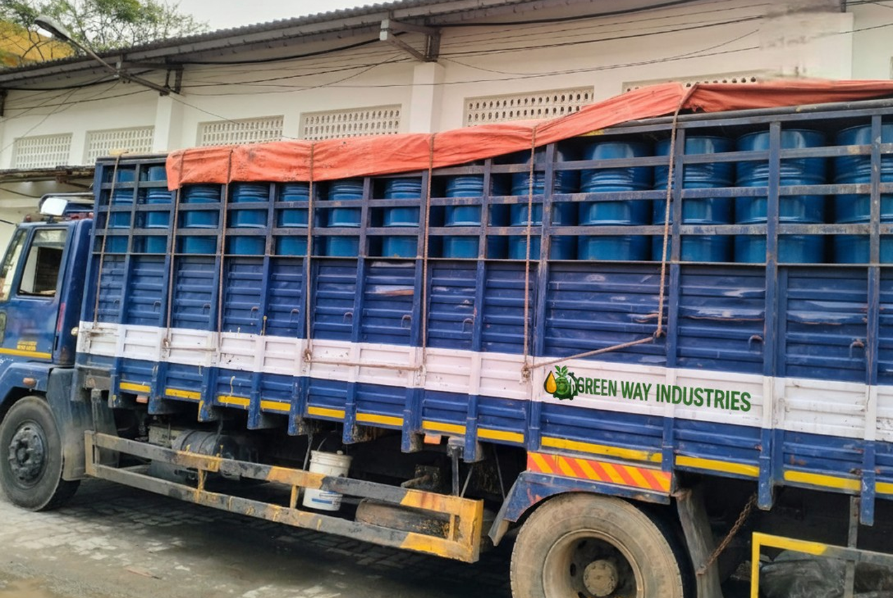
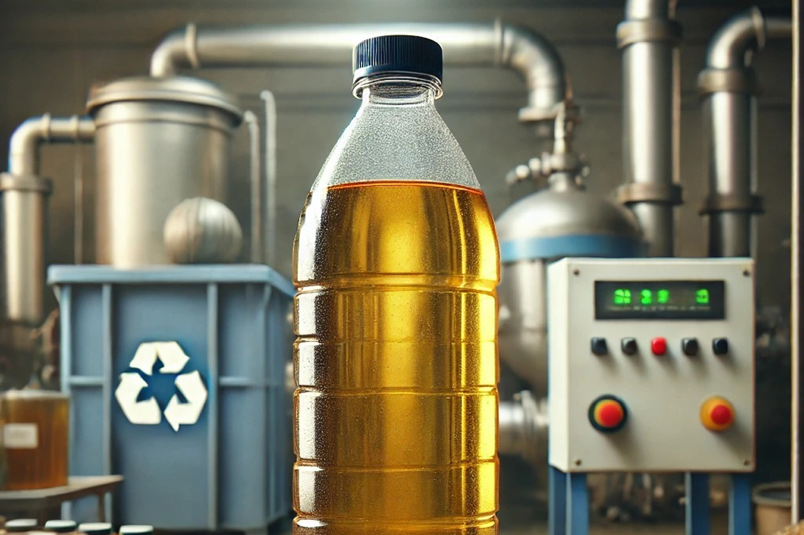

Used Transformer Oil Recycling Services in Tamil Nadu
Authorized collection, dielectric moisture removal, advanced re-refining, and compliant recycling solutions for degraded and aged transformer oil across Tamil Nadu.
Responsible Management for Spent & Degraded Transformer Oil
Depending on the condition and characteristics of the oil, appropriate treatment may involve filtration, moisture removal, purification, regeneration, recovery or another suitable management route.
Instead of allowing used transformer oil to become a long-term waste problem, appropriate recycling or regeneration can provide a route for resource recovery where technically suitable.
Our Infrastructure & Logistics Capabilities


Why Does Transformer Oil Need Recycling?
Transformer oil can change during its service life. Exposure to heat, electrical stress, moisture and oxidation can affect the oil’s physical, chemical and electrical properties.
Research on waste transformer oil has identified deterioration in parameters such as breakdown voltage and moisture content as the oil ages. Without proper remediation or resource recovery, degraded insulating oil poses operational hazards and environmental liabilities.
Contaminated or Degraded Oil May Contain:
- Moisture: Free and dissolved water reducing dielectric breakdown strength
- Suspended particles & Sediment: Solid particles, fibers and carbon deposits
- Oxidation products & Sludge: Insoluble compounds formed under thermal stress
- Acids & Degradation products: Corrosive acidic compounds degrading paper insulation
- Other contaminants: Chemical impurities accumulated during prolonged service
What Happens During Transformer Oil Recycling?
The exact process depends on the condition of the oil. Common transformer-oil regeneration and reclamation processes can include stages such as filtration, dehydration, removal of contaminants and adsorption-based treatment.
1. Collection & Identification
The used transformer oil is collected or received and its source and condition are understood.
2. Initial Assessment
The oil may be assessed based on available information and relevant quality parameters to determine the appropriate treatment route.
3. Filtration
Physical contaminants and suspended particles can be removed through suitable filtration processes.
4. Moisture Removal
Water and moisture are important concerns in insulating oil. Suitable treatment processes can reduce moisture content where applicable. Transformer-oil regeneration systems commonly use dehydration and degassing as part of the treatment process.
5. Regeneration or Purification
Depending on the oil condition, additional treatment may be used to remove degradation products and other contaminants.
6. Recovery or Further Management
After treatment, the oil can be directed toward an appropriate recovery, reuse or other waste-management route depending on its characteristics and applicable requirements.
The objective is not simply to clean the oil. It is to determine the most appropriate route for the specific used transformer oil.
Used Transformer Oil Recycling vs Transformer Oil Regeneration
These terms are sometimes used interchangeably, but the actual treatment objective can differ.
Transformer Oil Regeneration
Transformer oil regeneration generally refers to processes intended to remove degradation products and restore important properties of aged insulating oil.
Some regeneration systems use combinations of filtration, dehydration, degassing and adsorption to restore important oil properties like dielectric strength and interfacial tension.
Transformer Oil Recycling
Transformer oil recycling is a broader term covering the recovery and processing of used transformer oil into a suitable subsequent use or resource-recovery route.
The appropriate process depends on the condition and characteristics of the oil, ensuring either regeneration for high-specification reuse or secondary resource recovery.
When Does Transformer Oil Need Attention?
Transformer oil may require assessment or replacement when there are concerns such as:
- Increased moisture
- Contamination
- Suspended particles
- Oil oxidation
- Sludge formation
- Changes in electrical performance
- Deterioration identified during transformer maintenance
- Oil removed during equipment replacement
- Used oil accumulated after maintenance or repair
Regular oil-condition monitoring can help identify deterioration before it becomes a larger equipment-management issue.
Who Needs Used Transformer Oil Recycling?
Our service is relevant to organisations that generate or hold used transformer oil during operation, maintenance or equipment replacement:
Electrical Utilities
Power distribution and electrical infrastructure can generate used insulating oil during transformer maintenance and replacement.
Manufacturing Plants
Industrial facilities with transformers may accumulate used oil during scheduled maintenance or equipment servicing.
Power Generation Facilities
Power-related facilities can require appropriate management of transformer oil removed during maintenance activities.
Engineering & Electrical Contractors
Transformer installation, repair, maintenance and replacement projects can generate used transformer oil that requires responsible handling.
Industrial Maintenance Teams
Facilities replacing aged or contaminated transformer oil need an appropriate route for managing the removed oil.
Why Responsible Transformer Oil Recycling Matters
Used transformer oil should be managed carefully because inappropriate handling can create environmental and operational risks.
Responsible recycling and recovery can help:
- Reduce unnecessary disposal of recoverable oil
- Recover resources where technically suitable
- Reduce the risk of oil spills and leakage
- Improve industrial waste segregation
- Support responsible resource management
- Reduce dependence on replacing recoverable oil where regeneration is technically feasible
- Provide a structured route for managing oil removed during maintenance
Research into transformer-oil regeneration has also highlighted its potential to extend the useful life of insulating oil and reduce the environmental burden associated with disposal.
What Should You Do With Used Transformer Oil?
If transformer oil has been removed from your equipment, avoid treating it like ordinary industrial waste:
- Store It Properly: Keep the oil in suitable, secure containers designed for the material.
- Prevent Contamination: Avoid mixing transformer oil with unrelated chemicals, solvents, waste oils or other materials unless the appropriate management process specifically permits it.
- Protect Against Leakage: Inspect containers and storage areas regularly and take precautions against spills.
- Keep Different Oil Streams Separate: If your facility generates several types of used oil, maintaining segregation can make subsequent assessment and processing easier. Working with a certified used oil recycler helps keep materials properly cataloged.
- Contact a Suitable Recycler: Provide the recycler with information about the oil’s source, approximate quantity and condition.
Looking for Used Transformer Oil Recycling?
If your facility has transformer oil that has been drained, replaced, contaminated or removed during transformer maintenance, Green Way Industries can help you understand the appropriate recycling or waste-management requirement.
When contacting us, provide details such as:
- Approximate quantity of used transformer oil
- Source of the oil
- Transformer or equipment type
- Current storage method
- Pickup location
- Whether the oil is mixed with other materials
- Any available test or oil-condition information
This information helps determine the appropriate handling and processing route.
Used Transformer Oil Recycling in Chennai & Tamil Nadu
Green Way Industries has its office in Chennai and a factory facility in the Tindivanam–Villupuram region.
If your manufacturing facility, electrical installation, workshop, utility operation or industrial site has used transformer oil, contact our team with the available details.
We can discuss the quantity, source, location and condition of the oil and determine the appropriate collection and recycling requirement across Chennai, Villupuram, Tindivanam, Kanchipuram, Coimbatore, Salem and surrounding industrial clusters.
Comprehensive Industrial Support
In addition to transformer oil, we provide specialized services for hazardous waste recycling and broad industrial waste management.
Why Choose Green Way Industries?
Managing used transformer oil requires more than simply arranging transportation. Our approach is founded on five principles:
Understanding the Oil
The source and condition of transformer oil can influence the appropriate management route.
Responsible Collection
Used oil should be handled carefully to reduce the risk of spills and contamination.
Appropriate Processing
Different oil conditions may require different treatment or recovery approaches.
Resource Recovery
Where technically suitable, recycling or regeneration can provide a way to recover value from used oil.
Responsible Waste Management
Oil that cannot be regenerated or recovered still needs an appropriate management route.
Frequently Asked Questions
Key information regarding used transformer oil assessment, recycling, and compliance.
Used transformer oil recycling involves collecting and processing used or degraded insulating oil through suitable treatment, recovery or regeneration methods, depending on its condition.
Some used transformer oils may be suitable for regeneration or recovery, while others may require a different management route. The condition and characteristics of the oil need to be considered before determining reuse.
Transformer oil can deteriorate through factors such as heat, oxidation, moisture, electrical stress and contamination during service.
Treatment can involve processes such as filtration, dehydration, degassing, purification and regeneration, depending on the condition of the oil.
It may be possible depending on the type and level of contamination. The oil should be assessed before selecting the appropriate treatment or recovery route.
Collection can be arranged based on the oil type, quantity, location and storage conditions.
Businesses can contact Green Way Industries with the oil source, approximate quantity and location to discuss the appropriate collection and recycling requirement.
Green Way Industries is based in Chennai and has a factory facility in the Tindivanam–Villupuram region. Contact us to discuss your used transformer oil requirement.
Have Used Transformer Oil That Needs to Be Managed?
Whether the oil has been removed during transformer maintenance, replacement or repair, the next step should be planned carefully.
Send us the oil type, approximate quantity, source and pickup location and our team can discuss the appropriate recycling, recovery or waste-management solution.
Green Way Industries
Phone: +91 93600 36055
Email: admin@usedoil.in
Chennai Office:
78/30 Suscon Builder, 53rd Street, Ashok Nagar, Anjenear Kovil Opp, Chennai – 600083
Factory:
Plot No. 101, 102, 103 & 104, SIDCO Industrial Estate, Venmaniathur & Pattanam Village, Tindivanam Taluk, Villupuram District, Tamil Nadu – 604207